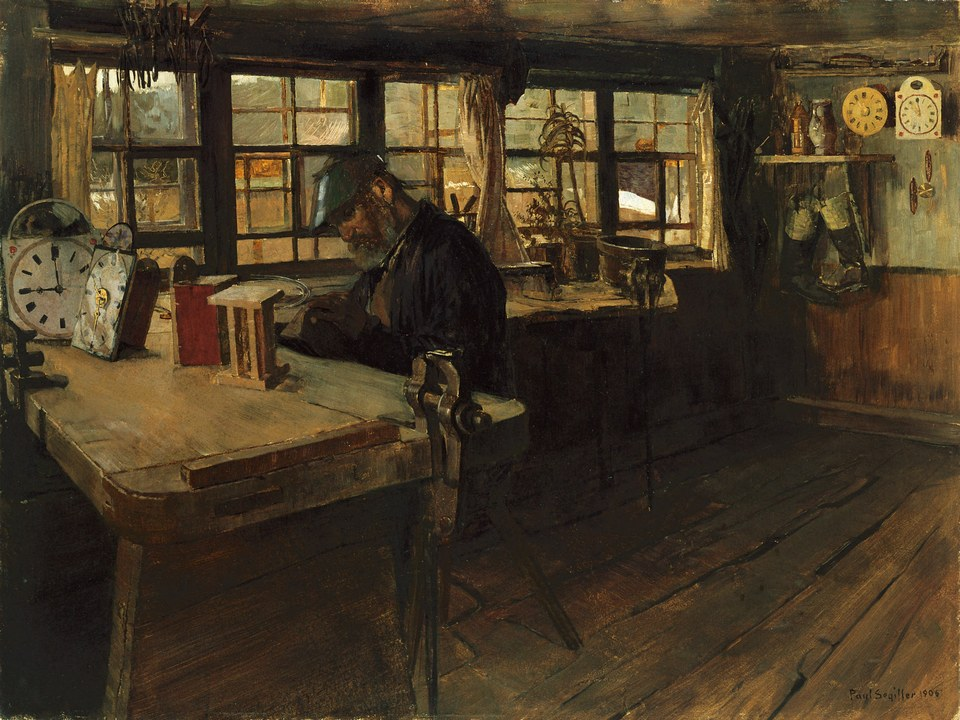

The Workshop
Gears, springs and half-built clocks everywhere. An old painting of Elias at his bench hangs by the door, and the room still looks exactly the same. It's very quiet, because every clock in here has stopped.

Set the stopped clock
12
3
6
9
The hand is pointing at 12 o'clock.